Deși există patru tipuri de obiecte de bază de date în Access, tabelele sunt probabil cele mai importante. Chiar și atunci când utilizați formulare, interogări și rapoarte, încă lucrați cu tabele, deoarece acolo sunt stocate toate datele dvs. Tabelele sunt în centrul oricărei baze de date, așa că este important să înțelegeți cum să le folosiți.
În această lecție, veți învăța cum să deschideți tabele, să creați și să editați înregistrări și să modificați aspectul tabelului pentru a fi mai ușor de vizualizat și de lucrat cu el.
Elementele de bază ale tabelului Pentru a deschide un tabel existent: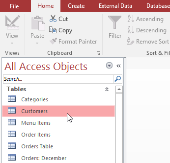
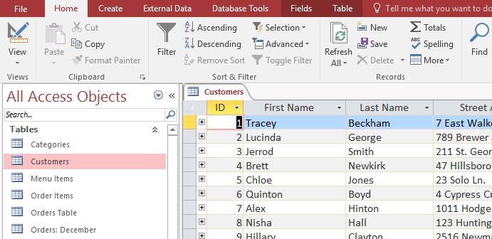
Toate tabelele sunt compuse din rânduri orizontale și coloane verticale, cu dreptunghiuri mici numite celule în locurile în care rândurile și coloanele se intersectează. În Access, rândurile și coloanele sunt denumite înregistrări și câmpuri.
Un câmp este o modalitate de organizare a informațiilor după tip. Gândiți-vă la numele câmpului ca la o întrebare și la fiecare celulă din acel câmp ca un răspuns la acea întrebare. În exemplul nostru, este selectat câmpul Nume , care conține toate numele de familie din tabel.
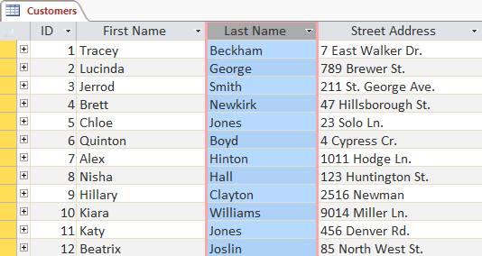
O înregistrare este o unitate de informație. Fiecare celulă de pe un anumit rând face parte din înregistrarea acelui rând. În exemplul nostru, este selectată înregistrarea lui Quinton Boyd, care conține toate informațiile legate de el din tabel.
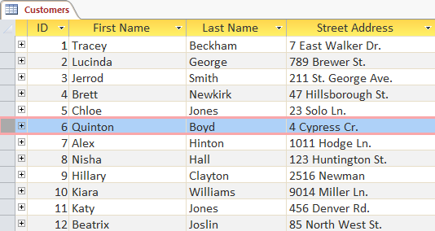
Pentru a deschide un obiect:Fiecare înregistrare are propriul său număr de identificare. În cadrul unui tabel, fiecare număr de identificare este unic pentru înregistrarea sa și se referă la toate informațiile din acea înregistrare. Numărul ID pentru o înregistrare nu poate fi schimbat.
Fiecare celulă de date din tabelul dvs. face parte atât dintr-un câmp , cât și dintr-o înregistrare. De exemplu, dacă ai avea un tabel cu nume și informații de contact, fiecare persoană ar fi reprezentată printr-o înregistrare, iar fiecare informație despre fiecare persoană - nume, număr de telefon, adresă și așa mai departe - ar fi conținută într-un câmp distinct pe rândul respectivului record.
Navigarea în cadrul tabelelorBara din partea de jos a tabelului conține mai multe comenzi pentru a vă ajuta să căutați sau să defilați prin înregistrări:
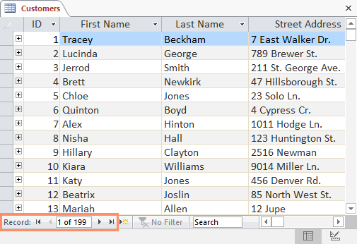
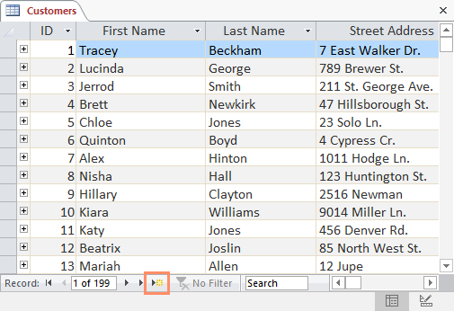
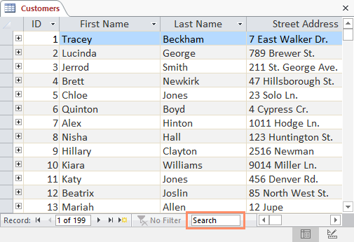
Pentru a naviga între câmpuri, puteți folosi tastele săgeți stânga și dreapta sau puteți derula la stânga și la dreapta.
Pentru a adăuga o înregistrare nouă:Există trei moduri de a adăuga o înregistrare nouă la un tabel:
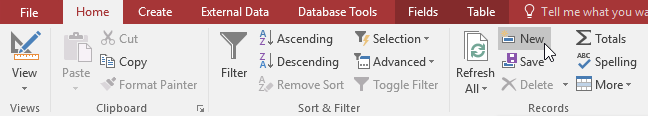
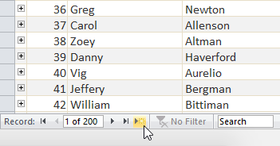
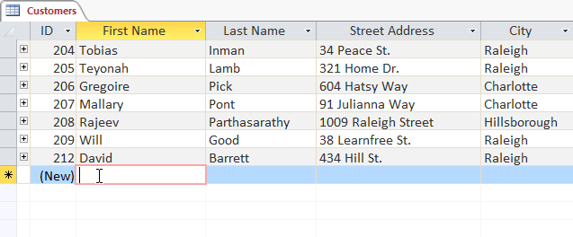
Puteți edita mai multe apariții ale aceluiași cuvânt utilizând Găsiți și înlocuiți, care caută un termen și îl înlocuiește cu un alt termen.
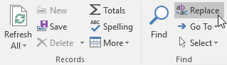
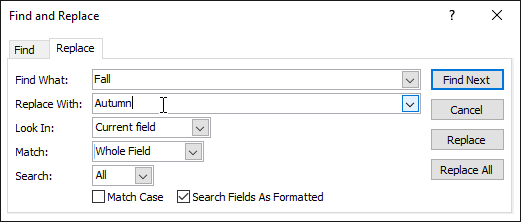
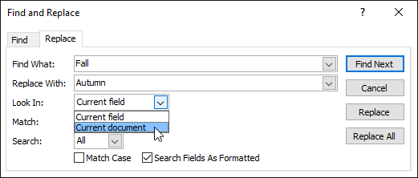
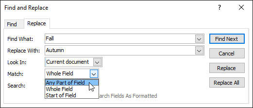
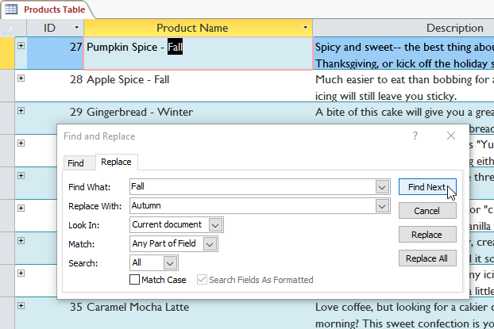
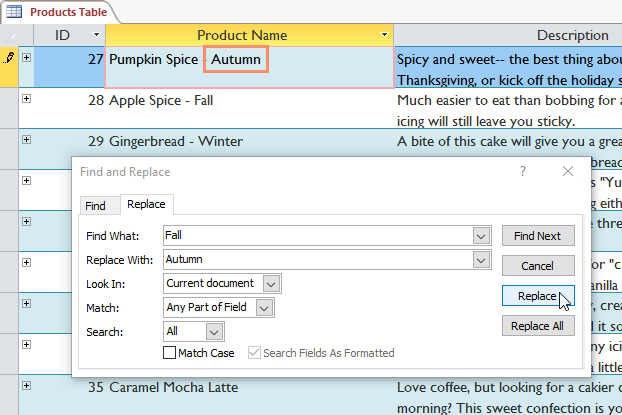
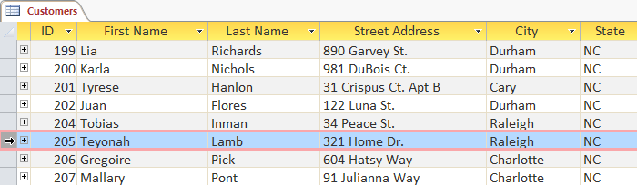
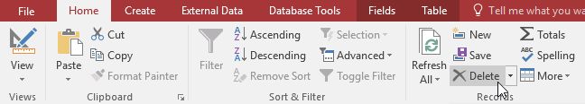
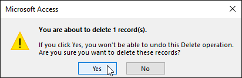